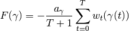
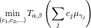
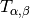
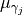
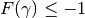
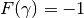
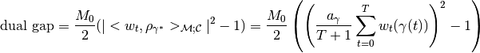
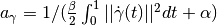
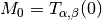

src.optimization¶
Module Contents¶
Functions¶
|
The F(γ) operator, minimization target in the insertion step. |
|
The gradient of the F operator, ∇F(γ). |
|
Trims a sparse measure by merging atoms that are too close. |
|
Compute optimal weights for a given measure. |
|
Applies the weight optimization step to target measure. |
|
Applies alternatedly the sliding and optimization step to measure. |
|
Applies the gradient descent to the curves that define the measure. |
|
Dual gap of the current measure. |
-
src.optimization.F(curve, w_t)¶ The F(γ) operator, minimization target in the insertion step.
- Parameters
- curve
src.classes.curve Curve γ where the F operator is evaluated.
- w_t
src.classes.dual_variable Dual variable that defines the F operator.
- curve
- Returns
- float
Notes
The F operator is defined via the dual variable as

with

-
src.optimization.grad_F(curve, w_t)¶ The gradient of the F operator, ∇F(γ).
- Parameters
- curve
src.classes.curve Curve γ where the F operator is evaluated.
- w_t
src.classes.dual_variable Dual variable that defines the F operator.
- curve
- Returns
Notes
The F operator is defined on the Hilbert space of curves, therefore the gradient should be a curve.
-
src.optimization.after_optimization_sparsifier(current_measure)¶ Trims a sparse measure by merging atoms that are too close.
Given a measure composed of atoms, it will look for the atoms that are too close, and if is possible to maintain, or decrease, the energy of the measure by joining two atoms, it will do it.
- Parameters
- current_measure
src.classes.measure Target measure to trim.
- current_measure
- Returns
- DGCG.classes.measure class
Notes
This method is required because the quadratic optimization step is realized by an interior point method. Therefore, in the case that there are repeated (or very close to repeated) atoms in the current measure, the quadratic optimization step can give positive weights to both of them.
This is not desirable, since besides incrementing the computing power for the sliding step, we would prefer each atom numerically represented only once.
-
src.optimization.solve_quadratic_program(current_measure)¶ Compute optimal weights for a given measure.
- Parameters
- current_measure
src.classes.measure.
- current_measure
- Returns
- list[
src.classes.curve] List of curves/atoms with non-zero weights.
- list[float]
List of positive optimal weights.
- list[
Notes
The solved problem is

Where  is the main energy to minimize
src.operators.main_energy()and  represents the atoms of the current measure.This quadratic optimization problem is solved using the CVXOPT solver.
-
src.optimization.weight_optimization_step(current_measure)¶ Applies the weight optimization step to target measure.
Both optimizes the weights and trims the resulting measure.
- Parameters
- current_measure
src.classes.measure Target sparse dynamic measure.
- current_measure
- Returns
src.classes.curves
Notes
To find the optimal weights, it uses
src.optimization.solve_quadratic_program(), to trimsrc.optimization.after_optimization_sparsifier().
-
src.optimization.slide_and_optimize(current_measure)¶ Applies alternatedly the sliding and optimization step to measure.
The sliding step consists in fixing the weights of the measure and then, as a function of the curves, use the gradient descent to minimize the target energy. The optimization step consists in fixing the curves and then optimize the weights to minimize the target energy.
This method alternates between sliding a certain number of times, and then optimizating the weights. It stops when it reaches the convergence critera, or reaches a maximal number of iterations.
- Parameters
- current_measure
src.classes.measure Target measure to slide and optimize
- current_measure
- Returns
Notes
To control the different parameters that define this method (alternation rate, convergence critera, etc) see
src.config.slide_opt_max_iter,src.config.slide_opt_in_between_iters,src.config.slide_init_step,src.config.slide_limit_stepsize
-
src.optimization.gradient_descent(current_measure, init_step, max_iter=config.slide_opt_in_between_iters)¶ Applies the gradient descent to the curves that define the measure.
This method descends a the function that takes a fixed number of of curves and maps it to the main energy to minimize applied to the measure with these curves as atoms and fixed weights. It uses an Armijo with backtracking descent.
- Parameters
- current_measure
src.classes.measure Measure defining the starting curves and fixed weights from which to descend.
- init_stepfloat
The initial step of the gradient descent.
- max_iterint, optional
The maximum number of iterations. Default
src.config.slide_opt_it_between_iters
- current_measure
- Returns
- new_measure
src.classes.measure Resulting measure from the descent process.
- stepsizefloat
The final reached stepsize.
- iterint
The number of used iterations to converge.
- new_measure
-
src.optimization.dual_gap(current_measure, stationary_curves)¶ Dual gap of the current measure.
The dual computed using a supplied set of stationary curves obtained from the multistart gradient descent
src.insertion_step.multistart_descent().- Parameters
- current_measure
src.classes.measure Current measure to compute the dual gap.
- stationary_curveslist[
src.classes.curve] Set of stationary curves, ordered incrementally by their F(γ) value.
- current_measure
- Returns
- float
Notes
It is assumed that the first element of the stationary curves is the best one and it satisfies . This is ensured since the multistart gradient descent descents the curves that are known from the last iterate, and the theory tells us that those curves satisfy .
Therefore, according to the theory, to compute the dual gap we can use the formula

With  and , the main energy
src.operators.main_energy()evaluated in the zero measure.